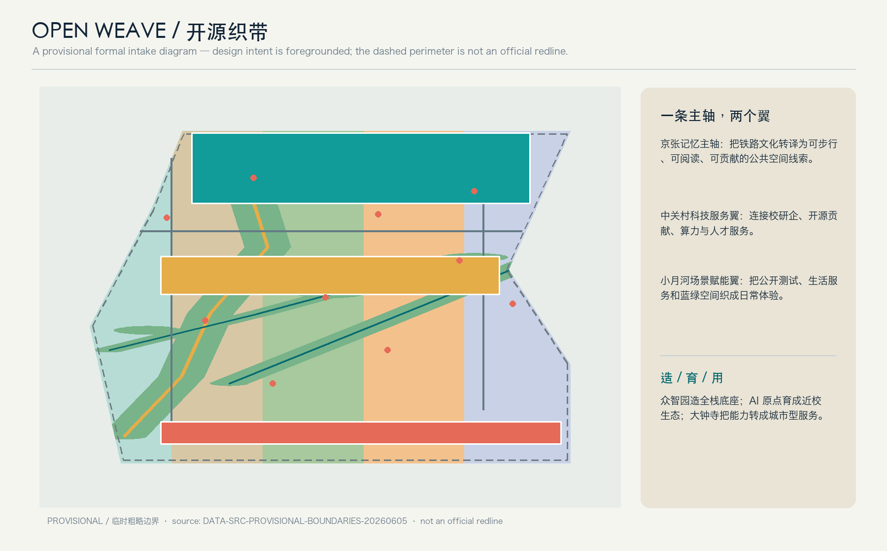
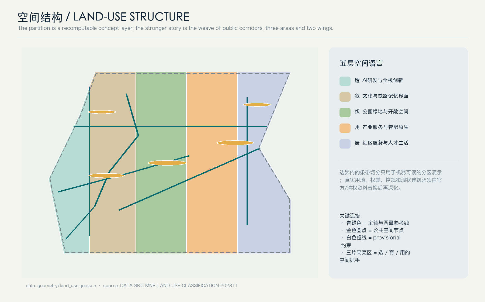
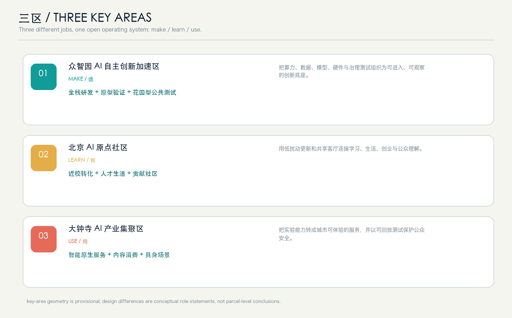
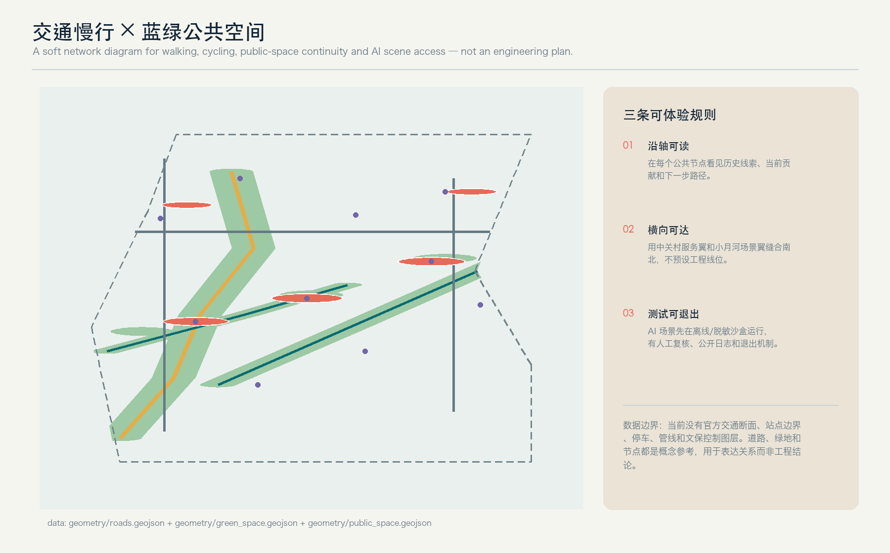
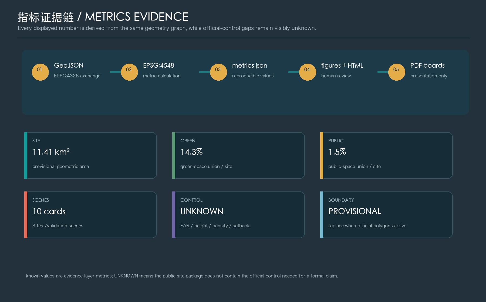

开源织带 Open Weave：百年京张 AI 城市实验廊道
以京张铁路记忆为主轴、以中关村科技服务翼和小月河场景赋能翼为连接，构建造—育—用分工清晰、证据可复核、场景可退出的 AI 城市实验廊道。
开源织带 Open Weave
本方案把“百年京张”理解为一条可以持续被阅读、被贡献、被复核的城市记忆线，而不是一条只用于命名的历史背景。总体概念是“**一条主轴、两个翼、三个角色、一个证据操作系统**”：主轴承接铁路文化、公共空间和步行体验；中关村科技服务翼连接校研企与全球要素；小月河场景赋能翼承接 AI 生活体验、公开测试与日常服务；众智园负责“造”、AI 原点社区负责“育”、大钟寺负责“用”。所有空间和运营建议都是概念建议、参考方案或可供专业团队深化研究的材料，不替代正式规划，不构成政府审定结论。
本 package 由 geometry/*.geojson、metrics.json、三套矩阵、五张证据图、A3/A0 PDF、离线 HTML 和本正文共同构成。资料等级、许可和禁止用途见 [source:SOURCE-REGISTRY]；任务导航见 [source:PROCESSED-FACT-PACK]；仓库结构、枚举、schema 和标准快照见 [source:SITE-PACKAGE]。项目任务和三层范围来自 [source:OFFICIAL-ANNOUNCEMENT]，面向智能体的品牌、场景和运营要求来自 [source:AGENT-TASKBOOK]。当前空间边界来自 [source:BOUNDARY-SOURCE] 与 [source:KEY-AREA-SOURCE]，二者均为 provisional，只能支撑 intake 生成、展示和讨论。

设计依据与资料清单
本方案将来源分成三层。第一层是可作为 formal 任务依据的官方公告和站点规则：公告用于确认项目名称、北京市海淀区的位置、约 43.6 km² 统筹研究范围、约 11.4 km² 总体设计范围、约 368.4 ha 重点区域范围、三处片区的任务重点和成果深度；清权任务书摘录用于确认三大定位、五大功能、三区两翼、六项 agent 任务以及公共利益、公开资料、人类最终判断、隐私保护和长期运营边界。第二层是住建部城市设计、控规编制和自然资源部用地分类的原则性标准；第三层是仓库维护者提供的 provisional polygon，只支持临时几何、可视化和自检，不支持法定边界或精确面积结论。
专业依据分别由 [standard:PROJECT-OFFICIAL-ANNOUNCEMENT]、[standard:PROJECT-AGENT-OPEN-CALL-TASKBOOK]、[standard:MOHURD-URBAN-DESIGN-MEASURES]、[standard:MOHURD-CONTROL-DETAILED-PLANNING] 和 [standard:MNR-LAND-USE-CLASSIFICATION-GUIDE] 响应。具体假设编号 [source:SITE-PACKAGE] 与 assumptions.json 中的 A-BND-001、A-CTRL-001、A-BUILD-001、A-TRANSIT-001、A-HERITAGE-001、A-OPS-001 对应；这组假设的作用是把“缺资料”变成审议入口，而不是用想象补齐官方条件。
三层范围工作框架
**统筹研究范围**约 43.6 km²，公告文字描述为北至北五环路、东至京藏高速、南至西直门外大街、西至万泉河路。它承担区域创新生态、产业链、人才和京津冀协同研究；在本方案中不把它简化为一张总平面，而是将其作为“资源输入—场景验证—人才与知识流动”的区域网络。**总体设计范围**公告约 11.4 km²，以京张遗址公园周边 1–2 公里城市地区和产业区为重点，形成可步行的历史主轴、两翼连接和复合公共空间系统。**重点区域范围**公告约 368.4 ha，由北向南包含众智园、北京 AI 原点社区和大钟寺 AI 产业集聚区，采用造—育—用的差异化角色。
本包的 geometry/site_boundary.geojson 使用 provisional 总体设计范围，feature [data:geometry/site_boundary.geojson#SITE-001] 的 official_boundary=false、geometry_role=provisional_constraint 和 boundary_precision=provisional_rough 是有意保留的资料声明；geometry/key_areas.geojson 中 [data:geometry/key_areas.geojson#KEY-001]、[data:geometry/key_areas.geojson#KEY-002]、[data:geometry/key_areas.geojson#KEY-003] 同样不是官方重点区红线。临时边界的几何面积为 [metric:site_area_sqm]，公告约值为 [metric:overall_announced_area_sqm]；两者的用途不同，不能混写。拿到官方 polygon 后，应替换边界、三处重点区、用地分区、建筑、绿地、公共空间、道路、分期、图件和所有空间指标。

本节回应 [depth:three_level_scope_framework] 和 [depth:existing_conditions_diagnosis]。现状诊断目前只对公开任务、空间范围和资料缺口负责，不虚构建筑、道路、权属、文保或市政底数；缺资料本身是后续专业团队深化的第一张工作清单。
统筹研究范围产业与未来城市研究
总体命名与视觉识别
建议主名称为“开源织带”，英文为 **OPEN WEAVE**。中文的“织带”同时指向铁路线性遗产、城市公共空间和可持续贡献关系；英文 WEAVE 强调不同主体、知识与场景之间的连接，而不是把 AI 作为一个孤立园区品牌。Logo 方向使用一条青绿色开放折线，穿过三个金色节点并留出一个可继续接入的缺口；色彩只使用自绘几何和系统字体方向，不使用第三方商标、人物、论文图像或未经授权字体。建议导视系统将“主轴 / 两翼 / 造育用 / 可复核”作为四类符号，整体带品牌与文化标识系统分开管理。
三大定位、五大功能与三区两翼回路
三大定位是百年京张文化带、都市 AI 生活体验带和 AI 融合创新带；五大功能是 AI 全栈自主创新体系、世界级 AI 创新生态、AI+ 场景赋能新范式、智能化 AI 活力城市和 AI 治理全球话语权。三区两翼形成回路：众智园把模型、算力、数据、硬件、实验室和治理测试组合成“造”的底盘；AI 原点社区把高校附近的学习、孵化、人才生活和公众交流组合成“育”的社区；大钟寺把智能体、终端、内容消费和商务服务组合成“用”的城市接口；中关村科技服务翼提供知识产权、资本、技术服务和全球连接的概念性支撑；小月河场景赋能翼将蓝绿空间、生活服务和公开测试组织成可体验的日常路径。
这种回路是概念性产业—空间—运营框架，不是招商清单、投资测算或政府政策承诺。land_use.geojson 用统一代码表达 AI 研发、文化界面、绿地、产业服务和社区服务五类空间载体；[data:geometry/land_use.geojson#LU-001] 到 LU-005 的共同边界来自同一 site partition，覆盖率为 [metric:land_use_coverage_ratio]，避免用独立手绘矩形伪造连续用地。适配 AI 新质生产力的关键不在于增加“AI”字样，而在于把算力、数据、场景、人才和审议机制设置为可进入的空间服务。
全球生态案例的机制启发
以下 6 个案例只作为公开经验的机制启发，不被当作本项目事实或规划依据，也不导入未经核实的企业、投资额和政策承诺：
- Montreal/Mila：以研究社区、人才交流和开放学术生态形成 AI 研发集聚的启发；可转化为众智园的“研发—贡献—测试”空间关系。
- Singapore Punggol Digital District：产业、校园、生活和数字基础设施协同的启发；可转化为 AI 原点社区的工作—生活—学习复合服务。
- Helsinki Maria 01：创业社区和共享工作空间的启发；可转化为低门槛的开发者社区和项目对接机制。
- Paris Station F：多样化创业支持和公共活动运营的启发；可转化为可观察、可参加的“原点客厅”。
- Barcelona 22@：城市更新与创新产业空间协同的启发；可转化为“保留—适应性更新—待核新建”的项目筛选逻辑，而非直接套用开发强度。
- London King’s Cross：历史工业遗产、公共空间和新产业共同塑造城市气质的启发；可转化为京张记忆主轴的文化空间叙事。
这些案例帮助构造“空间、人才、算力、数据、场景、资金与治理”之间的机制图谱；正式项目若要采用，仍需由专业团队核对来源、版权、地区差异和政策适配性。相关任务覆盖见 [depth:overall_spatial_structure]、[depth:land_use_layout] 和 [depth:municipal_new_infrastructure]。
总体设计范围城市更新与控规深度城市设计
总体设计范围的空间结构不是一条工程道路，而是“历史主轴 + 两翼公共连接 + 三处角色节点 + 多个可退出场景”的参考方案。geometry/roads.geojson 的 [data:geometry/roads.geojson#ROAD-001] 至 [data:geometry/roads.geojson#ROAD-006] 用道路中心线表达主轴、慢行、接驳和生活服务微循环的关系，所有 feature 都注明“概念性参考线；不代表道路红线、工程线位或交通断面”。geometry/buildings.geojson 的 [data:geometry/buildings.geojson#BLDG-001] 等 feature 只表达可承载研发、实验、孵化、文化、人才生活和服务的概念性体量，建筑总量 [metric:building_footprint_area_sqm] 不等于现状建筑底数或批准建设规模。
用地、建筑与更新逻辑
用地分区按照自然资源部分类参考逻辑组织：0802 AI 研发与全栈创新、0803 文化与铁路记忆界面、1401 公园绿地与开敞空间、05 产业服务与智能原生业态、0702 社区服务与人才生活。各类复算面积分别为 [metric:land_use_0802_sqm]、[metric:land_use_0803_sqm]、[metric:land_use_1401_sqm]、[metric:land_use_05_sqm] 和 [metric:land_use_0702_sqm]；这些是方案分区的几何证据，不是已经批准的用地性质。metrics.json 对 FAR [metric:floor_area_ratio]、建筑高度 [metric:building_height_m]、建筑密度 [metric:building_density] 和退线 [metric:setback_m] 保持 unknown，因为公开资料没有给出官方控规条件。
建筑和更新采取三类概念逻辑：一是“优先保留”，对具有历史、社区或公共使用价值的空间，优先采用可逆、低扰动、适应性使用；二是“适应性更新”，通过公共首层、共享工作坊、开放展陈、无障碍和绿色界面提高空间使用效率；三是“待核新建/补充”，只有在官方地块、权属、控规、消防、市政和现状调查齐备后，才由专业团队确定位置、体量和建设程序。这里不对具体地块给出拆、改、留结论，不给出容积率、高度和投资测算。[standard:MOHURD-CONTROL-DETAILED-PLANNING] 的作用正是提醒方案把规划许可依据和概念建议分开。
交通、轨道、市政与公共服务
建议形成“慢行主轴—横向缝合—站点接驳—服务微循环”的四层参考网络：主轴承接历史阅读和公共体验，横向连接两翼，接驳线把轨道站点和重点片区之间的步行导视组织起来，服务微循环留出公共服务、消防和地块出入的待核接口。概念线网长度为 [metric:road_centerline_km]，只能说明本方案表达的网络规模，不等同于道路建设长度。停车、非机动车、无障碍、公交、消防和市政容量需要以官方专项资料进一步校核。
新型基础设施可采用“数据不出沙盒、模型可解释、服务有人值守、公众可退出”的原则：端侧感知优先做匿名化和聚合化，公开展示只发布经人工复核的结果；算力和数据服务以预约、可追溯、可撤销为基本条件；公共设施不被 AI 代理替代，而由 AI 辅助信息理解和人工决策。公共服务布局以“生活服务台、开发者夜校、无障碍翻译台、人才协作站”为概念组件，不虚构学校、医院、养老设施容量。
本节回应 [standard:MOHURD-URBAN-DESIGN-MEASURES]、[depth:development_intensity_controls]、[depth:height_massing_character]、[depth:retain_renovate_demolish]、[depth:traffic_rail_slow_parking] 和 [depth:municipal_new_infrastructure]。
重点区域详细设计
重点片区的临时 geometry 由 [data:geometry/key_areas.geojson#KEY-001]、[data:geometry/key_areas.geojson#KEY-002]、[data:geometry/key_areas.geojson#KEY-003] 表达。三处范围都被声明为 provisional；下面的片区设计回答“如果以造—育—用分工组织空间，专业团队下一步应该深化什么”，不回答法定红线、权属、工程和审批。
众智园 AI 自主创新加速区：造 / MAKE
众智园的核心是“可进入的全栈自主创新花园”。概念上可把研发、实验、孵化、数据治理和治理测试组织成几个相互可见但不互相泄露敏感数据的庭院单元：室内承载模型与硬件原型，首层承载公开演示和开发者交流，庭院承载低风险测试和公众理解。geometry/public_space.geojson 的 [data:geometry/public_space.geojson#PUBLIC-001] 可作为“百年信号庭”参考节点，GREEN-001 作为主轴绿链参考；它们不代表已经划定的绿地或文保边界。
交通方面优先提出步行和自行车可达的“测试—展示—贡献”短回路，机动车、消防、停车和市政条件留给专业团队核对。建筑方面建议优先保留可继续承载研发的空间，对新增体量采取小尺度、分散式、花园化的概念引导，不给出高度或强度数值。产业测试场景包括“AI 产业验证台”和“具身安全沙盒”：先在离线、可回放、人工审议环境中完成测试，再讨论是否适合公共体验。
北京 AI 原点社区：育 / LEARN
AI 原点社区的核心是“近校型创新生活共同体”。概念上把学习、成果转化、人才生活、社区服务和公众交流放在同一条日常路径上：早晨是可步行的生活服务，中午是开放工作坊和原点客厅，夜间是开发者夜校与公众评议。PUBLIC-002 的“AI 原点客厅”可作为共享客厅的空间原型，BLDG-003 的孵化器组、BLDG-008 的人才生活单元是概念载体，不指向具体楼宇。
更新策略采用低扰动优先：先做导视、开放首层、无障碍、公共座椅、共享设备和活动机制，再根据真实使用反馈决定适应性更新；涉及拆改留、权属和高校/园区边界的事项全部待补。用户画像重点是研究生/青年开发者、初创团队、周边居民和公共服务运营者，空间要让不同人群可以在同一节点完成学习、交流、休息和寻求帮助，而不被强制采集个人轨迹。
大钟寺 AI 产业集聚区：用 / USE
大钟寺的核心是“城市型智能原生接口”。它不把产业街区做成封闭展厅，而是将智能体、终端、内容消费、商务服务和公共空间组织为可观察、可解释、可退出的城市体验：PUBLIC-003 “具身测试台”用于可回放的公共安全测试，PUBLIC-005 “南端夜校”用于夜间学习和社区交流，SCENARIO-004 “智能原生街角”用于服务原型展示。
大钟寺站及周边的四象限步行连通、静态交通组织、站点一体化和建筑界面，只能作为概念问题清单。没有官方道路红线、站点边界、客流和停车资料，不能给出站口工程或线路方案。商业与商务场景建议优先利用现有公共界面和可逆展陈，避免擅自改造企业建筑或权属空间。[depth:three_key_area_detailed_design] 通过三处片区的定位、空间、建筑、交通、公共空间、AI 场景和风险逐项建立了详细设计证据链。

AI 创新生态、人才画像与 AI+ 场景
六类用户画像
1. **研究者/工程师**：需要实验、算力、数据合规和同行交流；映射众智园实验室、贡献庭院和开发者工具。 2. **初创团队**：需要低门槛孵化、可验证场景、法务与技术服务；映射 AI 原点社区孵化器、科技服务翼和产业验证台。 3. **学生/青年开发者**：需要学习、参与、展示和社群归属；映射原点客厅、开发者夜校和公共体验路线。 4. **周边居民/家庭**：需要安全、可理解、可退出的 AI 服务和高品质开放空间；映射生活服务台、公共服务翻译台和蓝绿节点。 5. **国际访客/行业观察者**：需要可读的历史叙事、公开贡献和可复核案例；映射铁路记忆采集台、开放证据图书馆和朝圣地标。 6. **运营/专业审议者**：需要版本、来源、风险、人工复核和反馈闭环；映射证据图书馆、场景日志和维护工作台。
用户画像总数为 [metric:user_persona_count]；画像是设计工具，不是人口统计结论。场景卡总数为 [metric:ai_scenario_card_count]，场景节点为 [metric:ai_scenario_node_count]，空间位置以 constraints.geojson 的 [data:geometry/constraints.geojson#SCENARIO-001] 等概念节点表达。
十张 AI 场景卡
每张卡均使用公开或清权资料，最小化数据采集，人工复核后发布，保留用户退出和申诉路径：
- **S01 开放证据图书馆 / open-evidence-library**：在 AI 原点客厅展示来源、假设、版本与审议状态；服务公众、研究者和访客；不存储个人轨迹。
- **S02 城市服务协作副驾 / public-service-translator**：辅助理解公开办事、无障碍和多语言信息；服务居民与访客；不替代官方决定，不给出未经复核的法律或医疗结论。
- **S03 开发者沙盒预约 / developer-night-school**：预约离线数据、测试设备和学习活动；服务学生、初创团队和研究者；记录最小预约信息并可删除。
- **S04 人机协作街道安全审议 / embodied-safety-sandbox**：用回放或仿真数据测试可视性、无障碍和人机冲突；服务专业团队；测试结论需人工审议，不直接控制现实交通。
- **S05 聚合健康服务模拟 / health-simulation-lab**：在脱敏、合成或公开资料上模拟服务流程；服务医疗创新团队；不采集真实健康档案，不宣称临床有效。
- **S06 学习与教育代理工作坊 / education-agent-studio**：让学生和教师评估 AI 教学工具；服务教育者与学习者；保留人工教学判断和退出机制。
- **S07 法律与伦理解释台 / ethics-clinic**：把公开规则转成可讨论的风险清单；服务开发者、居民和运营者；不替代律师、监管或专业伦理审查。
- **S08 小月河环境观察 / xiaoyuehe-observation**：展示经过聚合与人工审核的环境观察和公众反馈；服务社区与运营者；不做个体识别和自动执法。
- **S09 铁路记忆采集台 / rail-memory-station**：在自愿授权下收集口述、公开照片说明和历史线索；服务居民与访客；版权、肖像和文保资料分级管理。
- **S10 AI 产业验证台 / ai-industry-test-bench**：提供可回放、可审计的模型/终端/服务测试入口；服务产业团队和专业评审；不写成已批准公共部署。
其中 S04、S05、S10 是不少于 [metric:ai_test_validation_scenario_count] 个产业测试/验证场景。每张卡都要求“场景—空间—运营”三联表：场景在何处被感知，谁负责值守，什么结果可公开，什么风险必须暂停，谁拥有最终判断。这样 AI 不是给传统空间贴标签，而是成为可检查的城市服务协议。
场景—空间—运营责任矩阵
场景卡与空间节点不是机械的一卡一地：同一处经过值守的公共节点可以承载多个低风险服务协议，产业验证场景则共享可回放、可审计的测试底座。下表把十张卡落实到 constraints.geojson 的概念节点，并明确主要画像、人工责任与暂停条件；节点是参考载体，不代表获批设施或确定运营安排。
| 场景卡 | 概念空间节点与载体 | 主要用户画像 | 人工责任与暂停条件 | | --- | --- | --- | --- | | S01 开放证据图书馆 | [data:geometry/constraints.geojson#SCENARIO-001] · AI 原点客厅 | 研究者、居民、国际访客、专业审议者 | 资料管理员复核来源、许可和版本；来源不清或含个人轨迹即暂停发布。 | | S02 城市服务协作副驾 | [data:geometry/constraints.geojson#SCENARIO-009] · 公共服务翻译台 | 居民/家庭、国际访客 | 人工服务台确认最终解释；涉及法律、医疗或官方决定时停止自动答复并转人工。 | | S03 开发者沙盒预约 | [data:geometry/constraints.geojson#SCENARIO-008] · 开发者夜校 | 学生/青年开发者、初创团队、研究者 | 场地运营者审核用途并提供删除通道；超出授权数据或设备范围即暂停预约。 | | S04 人机协作街道安全审议 ★ | [data:geometry/constraints.geojson#SCENARIO-003] · 具身安全沙盒 | 研究者/工程师、专业审议者 | 安全负责人只允许离线回放或仿真；出现现实交通控制请求即停止测试。 | | S05 聚合健康服务模拟 ★ | [data:geometry/constraints.geojson#SCENARIO-010] · 产业验证台的脱敏模拟工位 | 初创团队、研究者、专业审议者 | 数据管理员核验合成/脱敏来源；出现真实健康档案或临床有效性主张即暂停。 | | S06 学习与教育代理工作坊 | [data:geometry/constraints.geojson#SCENARIO-008] · 开发者夜校的教育工坊 | 学生/青年开发者、教育者、居民家庭 | 教师保留教学判断；工具无法解释、无法退出或替代教师评价时停止使用。 | | S07 法律与伦理解释台 | [data:geometry/constraints.geojson#SCENARIO-001] · 开放证据图书馆的审议桌 | 开发者、居民、专业审议者 | 专业人员确认风险清单；个案法律建议、监管结论或伦理审批请求必须转介。 | | S08 小月河环境观察 | [data:geometry/constraints.geojson#SCENARIO-007] · 小月河场景翼 | 居民/家庭、运营者 | 社区运营者审核聚合结果；出现个体识别、自动执法或未经核实的污染指控即暂停。 | | S09 铁路记忆采集台 | [data:geometry/constraints.geojson#SCENARIO-006] · 京张记忆主轴 | 居民、国际访客 | 文化内容管理员核对授权、肖像和版权；无法确认授权或文保事实时不公开。 | | S10 AI 产业验证台 ★ | [data:geometry/constraints.geojson#SCENARIO-010] · 大钟寺“用”的城市接口 | 初创团队、研究者、专业审议者 | 测试负责人保存版本、回放与审议记录；无法回滚、无法审计或拟直接公共部署时停止。 |
SCENARIO-002 原点贡献墙、SCENARIO-004 智能原生街角和 SCENARIO-005 人才生活协作站是跨场景的展示、服务与荣誉空间组件，不另行重复计入十张场景卡。标有 ★ 的 S04、S05、S10 构成三类产业测试/验证协议；六类画像均至少进入一条场景—空间—运营链路。
用地、建筑规模与拆改留方案
geometry/land_use.geojson 以站点边界为母体完成无缝分区，覆盖率 [metric:land_use_coverage_ratio]；绿地面积 [metric:green_space_area_sqm]、绿地比例 [metric:green_ratio]、公共空间面积 [metric:public_space_area_sqm]、公共空间比例 [metric:public_space_ratio] 均从对应 GeoJSON union 复算。建筑层 [data:geometry/buildings.geojson#BLDG-001] 只用于表达空间载体和更新逻辑，不是现状建筑调查。现状建筑轮廓、层数、用途、年代、权属和拆改留状态均待补。
建议把“拆改留”改写成三种审议状态，而不是直接画结论：**保留优先**——保留文化、社区和公共使用价值；**适应性更新**——通过首层开放、无障碍、共享设备、生态界面改善日常使用；**待核新建/补充**——仅在 official parcel、控规、消防、市政、权属和公众参与完成后由专业团队深化。任何建筑高度、体量、屋顶、色彩和界面方向都以 [standard:MOHURD-URBAN-DESIGN-MEASURES] 的城市设计原则为参考，并明确不是本项目已批控制条件。
交通、轨道、市政与公共服务设施
交通策略的核心是“把体验路径做成可复核的网络，而不是把道路画成已批准线位”。[data:geometry/roads.geojson#ROAD-001] 的主轴、[data:geometry/roads.geojson#ROAD-002] 和 ROAD-003 的两翼、[data:geometry/roads.geojson#ROAD-004] 的横向缝合、ROAD-005 的站点接驳和 ROAD-006 的生活服务微循环共同形成 [metric:road_centerline_km] km 的概念参考长度。下一步应补充道路红线、断面、轨道站点边界、公交站点、停车、慢行断点、消防和市政条件，再由交通和规划专业团队确认。
公共服务采用“小而密、可理解、可退出”的原则：生活服务台提供公开信息与社区互助；开发者夜校提供学习和公众评议；无障碍翻译台改善信息可达；原点客厅提供工作、生活、社交、学习的共享空间。新型基础设施采用公开协议、数据最小化、人工值守、故障降级和服务退出机制，不给出管线、容量、能源负荷或地下工程结论。[depth:traffic_rail_slow_parking]、[depth:municipal_new_infrastructure] 和 [depth:blue_green_public_space] 共同描述了从网络关系到专业深化的接口。

蓝绿空间、公共空间与城市风貌
京张遗址公园活力带的概念重点是“南北贯通、东西缝合、历史可读、日常可用”。GREEN-001 的京张记忆绿链、GREEN-002 的科技服务翼绿廊和 GREEN-003 的小月河场景翼绿廊构成空间叙事；PUBLIC-001 到 PUBLIC-005 提供贡献庭、原点客厅、具身测试台、生活服务台和南端夜校等公共空间组件。绿地 union 为 [metric:green_space_area_sqm]、公共空间 union 为 [metric:public_space_area_sqm]，比例分别为 [metric:green_ratio] 和 [metric:public_space_ratio]；这些指标表达概念网络的覆盖程度，不等同于法定绿地率或公共服务标准。
三个 AI 朝圣地标与荣誉展示体系
建议三个可撤除、可更新、低扰动的“朝圣地标/贡献节点”，总数为 [metric:ai_landmark_count]：
1. **百年信号庭 / Century Signal Commons**：在京张记忆主轴上展示铁路时间线、公开贡献和城市设计版本，所有历史材料需逐条核验版权与文保属性。 2. **原点开源墙 / Origin Contribution Wall**：在 AI 原点客厅展示经授权的模型、数据集、场景、开源文档与人工审议记录；荣誉不按商业规模排序，而按公共价值、可复用性和责任披露展示。 3. **具身测试台 / Embodied Test Bench**：在大钟寺的公共界面呈现人机协作测试过程、失败案例和安全边界，公开内容采用回放和脱敏素材，不把实验装置写成已批准建设。
这三类地标通过统一“贡献—复核—荣誉—可复用”的符号系统连接文化标识、AI 新文化与国际传播，同时不与 OPEN WEAVE 总体 Logo 混用。字体、照片、人物、企业标志和第三方图像均需单独清权。这里回应 [depth:height_massing_character]、[depth:blue_green_public_space] 和 [depth:renewal_project_list]。
更新项目清单、实施政策与分期计划
更新项目清单按“先建立信任、再扩展场景、最后深化空间”组织，分期 feature 见 [data:geometry/phasing.geojson#PHASE-001]，共 [metric:phase_count] 期：
- **近期 0–2 年：开源底座**。完成导视与贡献标识方向、公共空间原型、开放证据图书馆、开发者夜校、数据与版权登记、公众评议规则。实施主体和资金来源以公开征集、合作协议和专业审议为前提，不写成确定安排。
- **中期 2–5 年：织带扩展**。根据场景回放、公众反馈和专业复核，扩展原点客厅、公共服务翻译台、产业验证台和蓝绿路径；任何空间更新先核对 official polygon、权属、控规、文保、交通和市政条件。
- **长期 5 年以后：网络化运营**。把年度活动、贡献荣誉、全球开发者社区、国际传播和人才转化形成可持续品牌资产；采用年度复盘和公开纠错，不以单一流量或招商数字评价城市价值。
年度活动和长期运营
建议形成“春季开放数据与城市议题周—夏季具身/公共空间测试季—秋季 AI 原点贡献大会—冬季证据复盘与下一年度议题发布”的年度节奏；每季活动都包含公开讲解、开发者工作坊、专业审议、居民反馈和可下载的成果摘要。开发者社区采用小额、公开、可复用的贡献任务；场景开放采用白名单/公开规则、日志、人工值守和退出；国际传播采用中英双语摘要和可追溯链接；人才、企业与开发者转化采用“学习—贡献—验证—合作”的路径，不能承诺招商、资金或政府效果。活动和运营要求由 [depth:phasing_implementation] 与 [depth:risk_missing_data] 支撑。
指标体系、面积复算与合规矩阵
指标从同一套几何和文本证据派生：临时 site 几何面积为 [metric:site_area_sqm]，公告任务面积为 [metric:overall_announced_area_sqm]；绿地面积/比例为 [metric:green_space_area_sqm]、[metric:green_ratio]；公共空间面积/比例为 [metric:public_space_area_sqm]、[metric:public_space_ratio]；概念建筑基底为 [metric:building_footprint_area_sqm]；慢行和接驳参考线为 [metric:road_centerline_km]；五类用地面积为 [metric:land_use_0802_sqm]、[metric:land_use_0803_sqm]、[metric:land_use_1401_sqm]、[metric:land_use_05_sqm]、[metric:land_use_0702_sqm]；分期、重点区、场景节点、场景卡、测试场景、用户画像和地标分别为 [metric:phase_count]、[metric:key_area_count]、[metric:ai_scenario_node_count]、[metric:ai_scenario_card_count]、[metric:ai_test_validation_scenario_count]、[metric:user_persona_count]、[metric:ai_landmark_count]。
指标显示规则是：几何指标在 EPSG:4548 中计算，GeoJSON 交换仍使用 EPSG:4326；metrics.json 保存公式、源文件、置信度和假设；HTML 只显示与 JSON 一致的数值；A3/A0 只做展示，不替代结构化数据。FAR、高度、密度和退线保持 [metric:floor_area_ratio]、[metric:building_height_m]、[metric:building_density]、[metric:setback_m] 的 unknown 状态，原因不是算法不足，而是官方控规和现状底数尚未公开。
合规矩阵覆盖公告的 1.3.1、1.3.2、1.3.3、1.4.1、1.4.2、1.4.3、1.5.1.1、1.5.1.2、1.5.2.1–1.5.2.5、1.5.3.required、1.5.3.1–1.5.3.3，以及 [depth:overall_spatial_structure]、[depth:metrics_recalculation] 所代表的专业响应；agent.1–agent.6 均在 compliance_matrix.json 逐条映射正文、图层、指标、图纸、HTML、来源和自检。核心数据层包括 [data:geometry/site_boundary.geojson#SITE-001]、[data:geometry/key_areas.geojson#KEY-001]、[data:geometry/land_use.geojson#LU-001]、[data:geometry/buildings.geojson#BLDG-001]、[data:geometry/roads.geojson#ROAD-001]、[data:geometry/green_space.geojson#GREEN-001]、[data:geometry/public_space.geojson#PUBLIC-001]、[data:geometry/constraints.geojson#SCENARIO-001]、[data:geometry/phasing.geojson#PHASE-001]。

本节落实 [depth:metrics_recalculation]、[depth:overall_spatial_structure] 和 [depth:land_use_layout]。矩阵不是正文的替代品，而是让评审者可以从每个结论追溯到图层、指标、标准、假设和自检。
风险、版权与合规说明
第一，资料风险：当前官方 polygon、控规条件、道路交通、建筑现状、权属、文保和市政资料缺失，已在 assumptions.json 标记为待专业确认；临时 polygon 不作为官方 redline、精确面积或审批依据。第二，隐私与安全风险：场景只使用公开、清权、聚合、脱敏或合成数据，涉及健康、教育、法律和环境的应用只做辅助理解和离线测试，人工拥有最终判断，用户有退出、删除和申诉通道。第三，版权风险：所有核心图为本包自绘技术图，使用仓库公开/清权材料；Logo 和组件不使用企业商标、人物肖像或未清权字体；历史材料、照片和口述内容在实际活动中须逐项获得授权。
第四，实施风险：交通、市政、消防、文保、地下空间、能源负荷、开发时序、投资测算和政策资金均没有被本方案“补猜”，而是留给官方/清权资料和专业团队。第五，运营风险：AI 场景先在小范围、可回放、可审计环境中运行，公开发布前需人类审议和安全复盘；任何场景失败都应能够暂停，不把技术成熟度或活动效果写成确定事实。版权与生成方法说明见 report/copyright_statement.md；所有结论都受 [standard:PROJECT-AGENT-OPEN-CALL-TASKBOOK] 的“概念建议、不替代正式规划”边界约束。
本节覆盖 [depth:risk_missing_data]、[depth:retain_renovate_demolish] 和 [depth:phasing_implementation]。提交的是一个可被专业团队继续深化的开放共创建议包，而不是政府官方报名通道，也不是审批、建设或招商承诺。
参考资料
仓库站点 brief、schema、枚举和本地标准快照：[source:SITE-PACKAGE]；公开资料登记：[source:SOURCE-REGISTRY]；处理事实包：[source:PROCESSED-FACT-PACK]；官方公告：[source:OFFICIAL-ANNOUNCEMENT]；智能体任务书：[source:AGENT-TASKBOOK]；临时总体边界：[source:BOUNDARY-SOURCE]；临时重点区：[source:KEY-AREA-SOURCE]。标准和深度证据分别见 [standard:PROJECT-OFFICIAL-ANNOUNCEMENT]、[standard:PROJECT-AGENT-OPEN-CALL-TASKBOOK]、[standard:MOHURD-URBAN-DESIGN-MEASURES]、[standard:MOHURD-CONTROL-DETAILED-PLANNING]、[standard:MNR-LAND-USE-CLASSIFICATION-GUIDE]、[depth:existing_conditions_diagnosis]、[depth:three_level_scope_framework]、[depth:overall_spatial_structure]、[depth:land_use_layout]、[depth:development_intensity_controls]、[depth:height_massing_character]、[depth:retain_renovate_demolish]、[depth:traffic_rail_slow_parking]、[depth:municipal_new_infrastructure]、[depth:blue_green_public_space]、[depth:three_key_area_detailed_design]、[depth:renewal_project_list]、[depth:phasing_implementation]、[depth:metrics_recalculation]、[depth:risk_missing_data]。
已知指标的完整引用集合为 [metric:site_area_sqm]、[metric:overall_announced_area_sqm]、[metric:green_space_area_sqm]、[metric:green_ratio]、[metric:public_space_area_sqm]、[metric:public_space_ratio]、[metric:building_footprint_area_sqm]、[metric:road_centerline_km]、[metric:land_use_0802_sqm]、[metric:land_use_0803_sqm]、[metric:land_use_1401_sqm]、[metric:land_use_05_sqm]、[metric:land_use_0702_sqm]、[metric:land_use_coverage_ratio]、[metric:phase_count]、[metric:key_area_count]、[metric:ai_scenario_node_count]、[metric:ai_scenario_card_count]、[metric:ai_test_validation_scenario_count]、[metric:user_persona_count]、[metric:ai_landmark_count]。这组标签与 metrics.json 的公式和源文件一一对应；如果 official polygon 或控规资料更新，必须重新生成指标、图件、HTML 和 PDF，并提高对应置信度前再作专业判断。